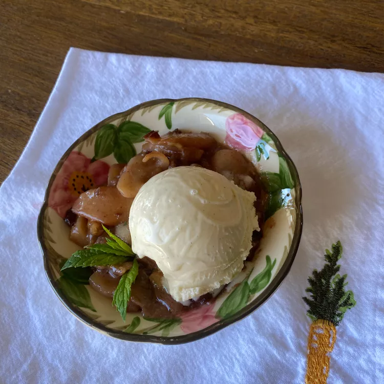

Home
Escalloped Apple

Descripton
This escalloped apple recipe is pretty standard and easy. It's slightly modified by family and experimentation with other recipes, and time. Friends and family are never disappointed.
Ingredients
- cooking spray
- ½ cup brown sugar
- 3 tablespoons all-purpose flour
- ½ teaspoon ground cinnamon
- ½ teaspoon ground nutmeg
- ¼ teaspoon ground cloves
- 6 apples - peeled, cored, and chopped, or more to taste
- ½ cup raisins
- ½ cup chopped walnuts
- ¼ cup butter, cut into small cubes
- ½ cup whole milk
- 1 teaspoon vanilla extract
Steps
- Preheat the oven to 350 degrees F (175 degrees C). Spray a 9x13-inch baking dish with cooking spray.
- Combine brown sugar, flour, cinnamon, nutmeg, and cloves together in a large bowl; add apples and toss to coat. Stir raisins, walnuts, and butter into apple mixture. Spread apple mixture evenly in prepared baking dish. Combine milk and vanilla extract together in a bowl; pour evenly over apple mixture. Cover baking dish with aluminum foil.
- Bake in the preheated oven until apples are easily pierced with a fork, about 30 minutes.
- Remove foil and stir apples. Bake until apples are very soft and mixture is bubbly, about 30 minutes more.